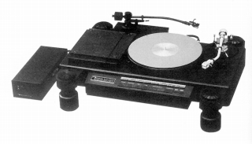
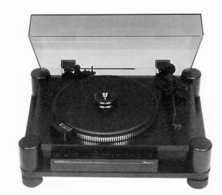
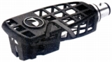
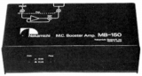
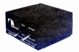

NAKAMICHI（ナカミチ）
1958年設立のカセットデッキ等で知られたオーディオメーカー。
1948年に故 中道悦郎氏が始めた個人研究所が母体であり、1950年に前身である千代田理研�鰍�設立し、「マジックトーン」ブランドでオープンリールテープレコーダーを発売、1958年に�樺�道研究所が設立され、研究開発、各所からの受託を中心にスタートした。1964年に自社ブランド「フィデラ」をスタートしたが、主体はあくまで研究開発、OEM受託であった。1969年にはKLH社、ドルビー社と共同でドルビーＢノイズリダクションを開発、1970年代初頭にはアメリカのカセットデッキのシェアの７割がナカミチが開発した製品で占められた。
現在知られている「ナカミチ」ブランドがスタートしたのは1973年からであり、最初の製品はカセットデッキ史上に残る名機「1000」であった。その後、数多くのカセットデッキの名機を開発した。さらにポータブルデッキからスタートした高品位のカーオーディオでも知られ、車載用のDAコンバーターまで出していた。1984年に東証2部に上場し、1980年代末までは盛んに新製品を発売していたが、1990年代に入り衰退し、会社としては2000年代に実質破綻、2008年5月末をもって、国内のホームオーディオからは完全に撤退している。
1970年代後半から1980年代半ばにはアナログディスク関連製品も手がけていた。管理人の手元にある資料では、最初の製品は1977年の単機能コンポのブラック・ボックスシリーズのMCカートリッジ用ヘッドアンプMB-150である。この年にはMC型カートリッジの販売も行っている。1982年にはこのブランドで特別な意味を持つ「1000」の型番をつけた独創的なターンテーブルTX-1000を、翌1983年にはセミオートプレイヤーDRAGON-CTを発売している。
 
�T.カートリッジ

(MC-1000)
�U.昇圧トランス・ヘッドアンプ
（ ヘッドアンプ) MB-150
（ 昇圧トランス) MCB-100
 
�V.その他
コンピューティングターンテーブルTX-1000用のオプションが存在した。